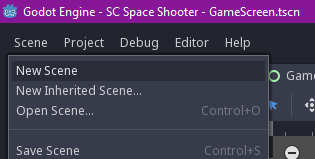
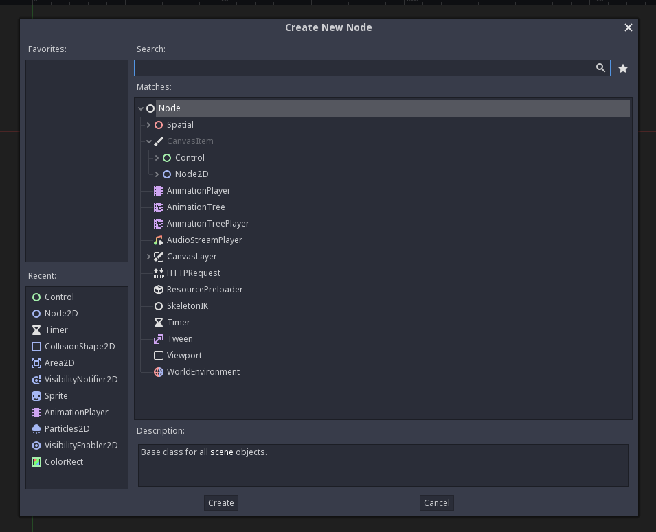
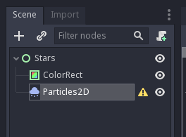
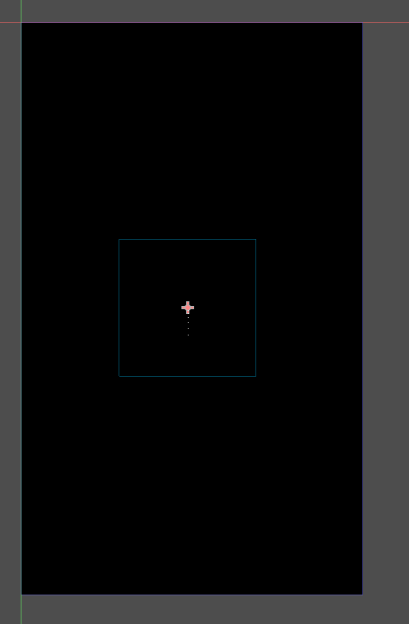
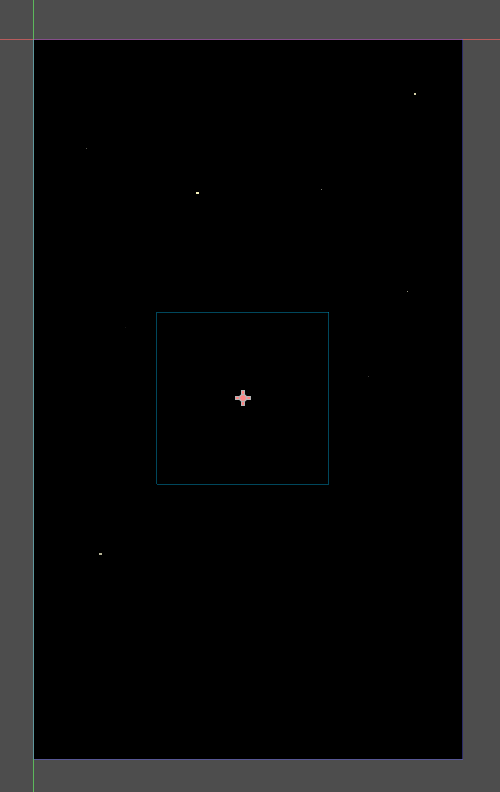

Un fond avec des étoiles
Préparation
Avec juste un fond noir ça fait pas vraiment espace, il manque un truc: des étoiles.
Donc on va faire en sorte d'illuminer un peu tout ça, via une petite arnaque: on va utiliser un système de particules.
Avec un système de particules, on peut faire n'importe quoi:
- De la pluie,
- De la neige,
- Du feu,
- Une explosion,
- De la fumée,
- Ou bien encore des étoiles !
Faut pas avoir peur, un système de particules c'est assez simple finalement, ça a juste beaucoup d'options, ce qui fait qu'on peut faire ce qu'on veut.
Alors on va tout de suite créer notre première scène. Appuyez sur Scene -> New Scene.

Un nouvel onglet est apparu, et sur la gauche vous avez le choix pour le node racine.
Parmi les nodes proposés, il y a:
- 2D Scene: Va choisir un node de type
Node2Den racine. - 3D Scene: Va choisir un node de type
Nodeen racine. - User Interface: Va choisir un node de type
Controlen racine. - Custom Node: Va vous permettre de sélectionner un autre node.

Partez sur un node Control, et enregistrez la scène dans le dossier res://fx/ sous le nom Stars.tscn.
Renommez le node Control en Stars.
Puis changez le Layout du noeud pour le passer en Full Rect.

Le node va maintenant prendre toute la surface de l'app.
On va créer un node de type ColorRect (en noir) qui va prendre toute la place du parent pour répliquer un semblant d'espace.
Il faut faire un clique droit sur le node Stars puis Add Child Node.

Vous avez toute une série de nodes à disposition.
Cherchez ColorRect puis appuyez sur Create.

Recommencez l'opération avec le clique droit sur Stars, Add Child Node puis cherchez Particles2D.
Vous devriez avoir cet arbre de nodes:

Un fond
On va commencer par s'occuper du ColorRect. Cliquez dessus et regardez sur la droite.

Godot se repose sur des concepts d'héritages, reprenant les principes de la POO. Ici, on voit 4 sections:
- ColorRect
- Control
- CanvasItem
- Node
On voit en fait ici l'héritage des noeuds. ColorRect hérite de Control, qui hérite de CanvasItem, qui hérite de Node.
On peut depuis l'inspecteur changer chaque propriété exposée dans chacun de ces nodes.
Ce qui nous intéresse ici, c'est le champ Color de ColorRect. Cliquez dessus et changez la couleur pour mettre du noir.
Le petit carré devrait devenir noir dans la vue principale au centre. On va le faire grandir pour qu'il prenne toute la place du parent, de la même façon que tout à l'heure: Layout > Full Rect.

On vient de répliquer le node Background de la scène GameScreen de tout à l'heure: on a un fond noir.
Des étoiles
On va se concentrer sur les particules maintenant.
Cliquez sur le node Particles2D, qui a un petit warning à coté: si vous survolez, il vous dit qu'il y a pas de material pour gérer les particules.
Avec Godot, il y a deux types de material pour les particules:
- ShaderMaterial: Utilisation d'un shader. Ca parle peut être à certains, le monde des shaders est un sujet hyper complexe, on ne va pas attaquer ça aujourd'hui.
- ParticlesMaterial: Utilisation d'un material configurable depuis l'inspecteur, ce qu'on va choisir.
Pour lier un material, il faut aller dans l'inspecteur à droite, puis choisir un New ParticlesMaterial dans la section Particles2D > Process Material > Material.

Pour le configurer, il faut ensuite cliquer sur ce material, et les paramètres vont apparaître en dessous. C'est ici que tout va se passer.
On va commencer par déplacer le node sur la vue du centre pour le mettre au centre de la scène, soit en drag & drop, soit en changeant la valeur dans Node2D > Transform > Position.
Si vous zoomez sur l'interface, vous voyez que le système de particules est actif, et que des particules sont bien générées.

D'ici, vous pouvez configurer le système de particules comme vous le voulez, jouer avec la couleur, la taille, la texture, la vitesse, la gravité, et plein d'autres paramètres.
Pour avoir un truc qui ressemble à un ensemble d'étoiles voici ce que je recommande:
Emission Shape -> Shape: ChoisirBoxEmission Shape -> Box Extents: Choisir(X: 250, Y: 425, Z: 1)Gravity -> Gravity> Choisir(X: 0, Y: 0, Z: 0)
Ca ressemble déja un peu à des étoiles.
Scale -> Scale: Choisir4Scale -> Scale Random: Choisir1Scale -> Scale Curve: ChoisirNew CurveTextureScale -> Scale Curve -> Curve: Déplacer le dernier point vers le bas à 0
Maintenant on va jouer avec la couleur.
Color -> Color Ramp: ChoisirNew GradientTextureColor -> Color Ramp -> Gradient: ChoisirNew GradientColor -> Color Ramp -> Gradient -> Gradient: Cliquer sur le curseur à gauche, puis sur la couleur dans l'encart à droite, et choisir une couleur blanche (ou la couleur que vous souhaitez).Color -> Color Ramp -> Gradient -> Gradient: Cliquer sur le curseur à droite, puis sur la couleur dans l'encart à droite, et déplacer le curseur A (Alpha) à 0.
Voilà, on a un effet "fade-out".

Tada, des étoiles !
Oubliez pas d'enregistrer la scène, on va pouvoir l'intégrer au GameScreen.
Intégration
Retournez sur le GameScreen, supprimez le node Background via un clique-droit et Delete Node.
Ensuite, clique-droit sur le GameScreen puis Instance Child Scene, et ajoutez votre scène Stars.
Si ce n'est pas le cas, déplacez le nouveau noeud Stars vers le haut de l'arbre, en premier sous GameScreen, et renommez le en Background.
Faites Play Scene, et voilà, les étoiles en action !